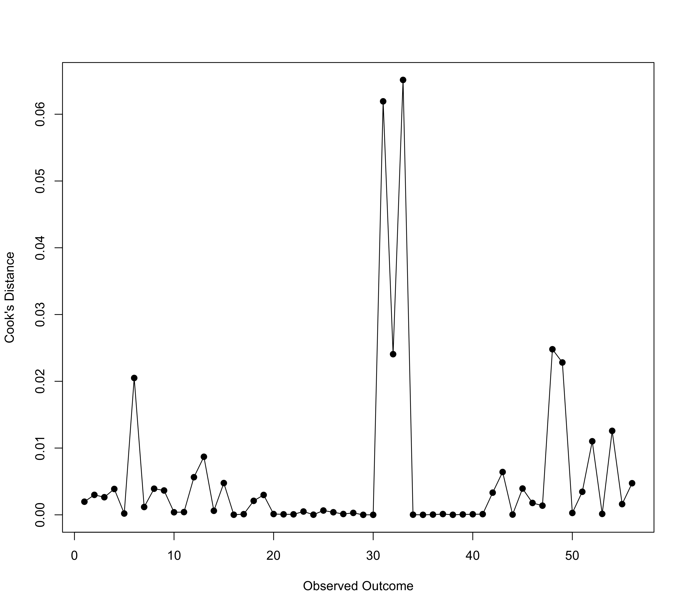

influence.rma.mv.RdThe functions can be used to compute various outlier and influential case diagnostics (some of which indicate the influence of deleting one case/study at a time on the model fit or the fitted/residual values) for objects of class "rma.mv".
# S3 method for rma.mv cooks.distance(model, progbar=FALSE, cluster, reestimate=TRUE, parallel="no", ncpus=1, cl=NULL, ...) # S3 method for rma.mv dfbetas(model, progbar=FALSE, cluster, reestimate=TRUE, parallel="no", ncpus=1, cl=NULL, ...) # S3 method for rma.mv hatvalues(model, type="diagonal", ...)
| model | an object of class |
|---|---|
| progbar | logical indicating whether a progress bar should be shown (the default is |
| cluster | optional vector specifying a clustering variable to use for computing the Cook's distances. If not specified, Cook's distances are computed for all individual observed outcomes. |
| reestimate | logical indicating whether variance/correlation components should be re-estimated after deletion of the \(i\)th study/cluster (the default is |
| parallel | character string indicating whether parallel processing should be used (the default is |
| ncpus | integer specifying the number of processes to use in the parallel processing. |
| cl | optional snow cluster to use if |
| type | character string indicating whether to return only the diagonal of the hat matrix ( |
| ... | other arguments. |
Cook's distance for the \(i\)th study/cluster can be interpreted as the Mahalanobis distance between the entire set of predicted values once with the \(i\)th study/cluster included and once with the \(i\)th study/cluster excluded from the model fitting.
The DFBETAS value(s) essentially indicate(s) how many standard deviations the estimated coefficient(s) change(s) after excluding the \(i\)th study/cluster from the model fitting.
The cooks.distance function returns a vector. The dfbetas function returns a data frame. The hatvalues function returns either a vector with the diagonal elements of the hat matrix or the entire hat matrix.
Right now, leave-one-out diagnostics are calculated by refitting the model \(k\) times (where \(k\) is the number of studies/clusters). Depending on how large \(k\) is, it may take a few moments to finish the calculations. For complex models fitted with rma.mv, this can become computationally expensive.
On machines with multiple cores, one can usually speed things up by delegating the model fitting to separate worker processes, that is, by setting parallel="snow" or parallel="multicore" and ncpus to some value larger than 1. Parallel processing makes use of the parallel package, using the makePSOCKcluster and parLapply functions when parallel="snow" or using mclapply when parallel="multicore" (the latter only works on Unix/Linux-alikes). With parallel::detectCores(), one can check on the number of available cores on the local machine.
Alternatively (or in addition to using parallel processing), one can also set reestimate=FALSE, in which case any variance/correlation components in the model are not re-estimated after deleting the \(i\)th study/cluster from the dataset. Doing so only yields an approximation to the Cook's distances and DFBETAS values that ignores the influence of the \(i\)th study/cluster on the variance/correlation components, but is considerably faster (and often yields similar results).
It may not be possible to fit the model after deletion of the \(i\)th study/cluster from the dataset. This will result in NA values for that study/cluster.
Belsley, D. A., Kuh, E., & Welsch, R. E. (1980). Regression diagnostics. New York: Wiley.
Cook, R. D., & Weisberg, S. (1982). Residuals and influence in regression. London: Chapman and Hall.
Viechtbauer, W. (2010). Conducting meta-analyses in R with the metafor package. Journal of Statistical Software, 36(3), 1--48. https://doi.org/10.18637/jss.v036.i03
Viechtbauer, W., & Cheung, M. W.-L. (2010). Outlier and influence diagnostics for meta-analysis. Research Synthesis Methods, 1(2), 112--125. https://doi.org/10.1002/jrsm.11
### copy data from Konstantopoulos (2011) into 'dat' dat <- dat.konstantopoulos2011 ### multilevel random-effects model res <- rma.mv(yi, vi, random = ~ 1 | district/school, data=dat) print(res, digits=3)#> #> Multivariate Meta-Analysis Model (k = 56; method: REML) #> #> Variance Components: #> #> estim sqrt nlvls fixed factor #> sigma^2.1 0.065 0.255 11 no district #> sigma^2.2 0.033 0.181 56 no district/school #> #> Test for Heterogeneity: #> Q(df = 55) = 578.864, p-val < .001 #> #> Model Results: #> #> estimate se zval pval ci.lb ci.ub #> 0.185 0.085 2.185 0.029 0.019 0.350 * #> #> --- #> Signif. codes: 0 ‘***’ 0.001 ‘**’ 0.01 ‘*’ 0.05 ‘.’ 0.1 ‘ ’ 1 #>#> 1 2 3 4 5 6 #> 1.965212e-03 2.989768e-03 2.638140e-03 3.873368e-03 1.954562e-04 2.049672e-02 #> 7 8 9 10 11 12 #> 1.172821e-03 3.913806e-03 3.646294e-03 3.850068e-04 4.111673e-04 5.636933e-03 #> 13 14 15 16 17 18 #> 8.697463e-03 6.052503e-04 4.759729e-03 1.527261e-05 9.905788e-05 2.095987e-03 #> 19 20 21 22 23 24 #> 2.978160e-03 1.173555e-04 7.600104e-05 7.315289e-05 4.966021e-04 2.024080e-05 #> 25 26 27 28 29 30 #> 6.448093e-04 3.866063e-04 1.220054e-04 2.886483e-04 7.676490e-08 1.391702e-06 #> 31 32 33 34 35 36 #> 6.193156e-02 2.406239e-02 6.513879e-02 2.075376e-05 8.763819e-07 3.485720e-05 #> 37 38 39 40 41 42 #> 1.141739e-04 6.503505e-06 5.671804e-05 8.326350e-05 1.048009e-04 3.320742e-03 #> 43 44 45 46 47 48 #> 6.412251e-03 3.831098e-05 3.937144e-03 1.780433e-03 1.374408e-03 2.479767e-02 #> 49 50 51 52 53 54 #> 2.281846e-02 2.803636e-04 3.453698e-03 1.101867e-02 1.405349e-04 1.257869e-02 #> 55 56 #> 1.606173e-03 4.733739e-03#> 11 12 18 27 56 58 #> 0.0693784140 0.0161880606 0.0419849759 0.1192089452 0.0213566370 0.1014506985 #> 71 86 91 108 644 #> 0.5585174853 0.0656500671 0.0037438517 0.0548839759 0.0003441647#> 1 2 3 4 5 6 #> 0.018246414 0.018246414 0.015562154 0.015562154 0.024305990 0.024305990 #> 7 8 9 10 11 12 #> 0.023796820 0.020021978 0.028628711 0.021068630 0.035668057 0.018288352 #> 13 14 15 16 17 18 #> 0.026253550 0.026253550 0.024271478 0.018700077 0.024347299 0.025637683 #> 19 20 21 22 23 24 #> 0.026335563 0.008149594 0.008470846 0.008307115 0.007851819 0.008149594 #> 25 26 27 28 29 30 #> 0.007997936 0.011094988 0.010815774 0.010815774 0.010815774 0.010815774 #> 31 32 33 34 35 36 #> 0.027875751 0.030425177 0.031137102 0.012900198 0.012900198 0.012900198 #> 37 38 39 40 41 42 #> 0.012900198 0.012900198 0.012900198 0.012900198 0.012900198 0.016836925 #> 43 44 45 46 47 48 #> 0.016451963 0.016836925 0.017240335 0.015732539 0.015732539 0.018231717 #> 49 50 51 52 53 54 #> 0.018231717 0.018522325 0.018522325 0.018522325 0.017484652 0.018246600 #> 55 56 #> 0.020990821 0.020990821